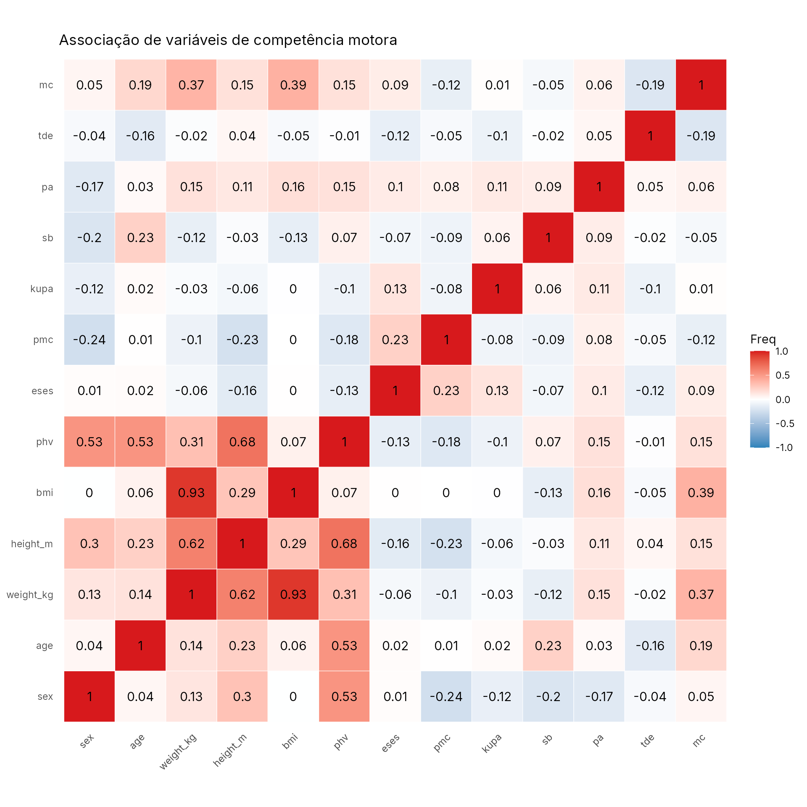

srl_muni
srl_muni.RmdPhysical Literacy (Letramento Físico) e Desempenho em Leitura de crianças de escolas do Amazonas: um estudo de associação
Descrição
Uma base de dados com o objetivo de investigar a associação entre Letramento Físico e Desempenho em Leitura de escolares amazônicos. Método: Trata-se de um estudo de associação, transversal e de abordagem quantitativa realizado com estudantes de escolas do Amazonas (n=100; idade entre 10 e 13 anos) de 3 escolas públicas do município de Borba (Amazonas).
Formato
‘srl_muni’ Um data frame com 100 linhas e 17 colunas:
phv
Peak Height Velocity (PHV) ou Pico de Velocidade do Crescimento (PVC) - é uma variável contínua, medida pela idade (em anos) relativa ao pico de altura no período onde ocorre máxima taxa de crescimento. É uma indicação de maturidade.
eses
Exercise Self-Efficacy Scale ou ECE-AF — Confiança para Envolvimento em Atividade Física, mede o quão confiantes os estudantes estão em relação a ter atividades físicas e exercícios. É medido por uma escala psicométrica.
pmc
Perceived Motor Competence (PMC) ou PCM — Percepção de Competência Motora, mede a própria percepção da criança sobre sua habilidade para executar movimentos motores. É medido por uma escala psciométrica.
kupa
Knowledge and Understanding of Physical Activity (KUPA) ou ECC-AF — Conhecimento e Compreensão sobre Atividade Física, avalia o conhecimento sobre benefícios, segurança e participação em atividades físicas. É medido pela pontuação em questões objetivas.
sb
Sedentary Behavior (SB) ou Comportamento Sedentário (CS). Avalia o tempo de exposição a comportamentos sedentários. É medido por uma escala psicométrica.
pa
Physical Activity (PA) ou Atividade Física - Nível de atividade física da criança, com base em frequência e duração de atividades cotidianas. Medido por pontuação em questionário de frequência de atividade física.
mc
Competência Motora - Supine-To-Stand, corresponde a competência motora medida pelo tempo (em segundos) que a criança leva para se levantar do chão, da posição supina até a posição em pé.
Fonte
ALMEIDA, Thiago da Cruz de. Physical Literacy e desempenho em leitura de escolares amazônicos: um estudo de associação. 2024. 104 f. Dissertação (Mestrado em Educação) - Universidade Federal do Amazonas, Manaus, 2024. Disponível em: https://tede.ufam.edu.br/handle/tede/10627.
Exemplos
# Associação entre desempenho em leitura e aptidão física
library(dplyr)
library(ggplot2)
library(amazonasdatahub)
srl_muni %>%
select(where(is.numeric)) %>%
cor(use = "complete.obs") %>%
as.table() %>%
as.data.frame() %>%
ggplot(aes(Var1, Var2, fill = Freq)) +
geom_tile(color = "white") +
geom_text(aes(label = round(Freq, 2)), size = 4) +
scale_fill_gradient2(low = "#2b83ba", mid = "white", high = "#d7191c", midpoint = 0, limits = c(-1, 1)) +
theme_minimal() +
theme(axis.title = element_blank(), axis.text.x = element_text(angle = 45, hjust = 1), panel.grid = element_blank()) +
coord_fixed() +
labs(
title = "Associação de variáveis de competência motora"
)